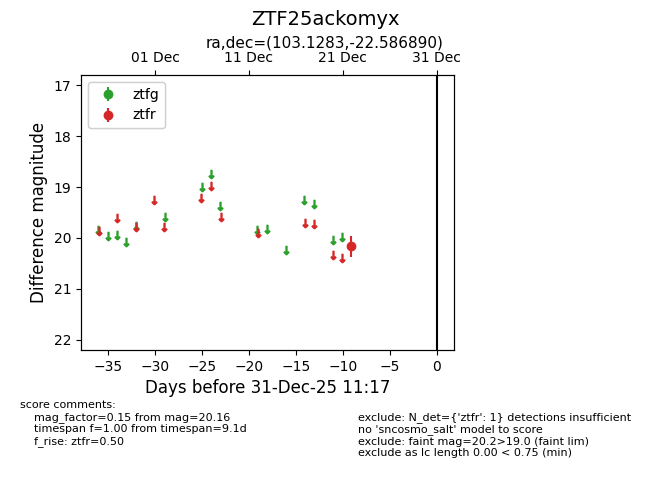
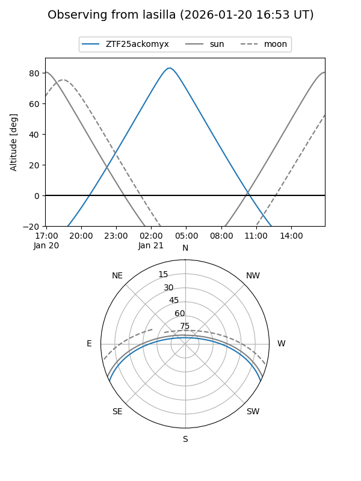

ZTF25ackomyx
Target ZTF25ackomyx at 2025-12-31 17:00
Aliases and brokers:
FINK:
Lasair:
ALeRCE:
alt names
ZTF25ackomyx (ztf,fink_ztf)
Coordinates:
equatorial (ra, dec) = 103.1283,-22.58689
equatorial (HMS+DMS) = 06:52:30.79,-22:35:12.81
galactic (l, b) = (233.3558,-9.86229)
Flags:
Photometry:
last ztfr=20.16
1 ztfr detections
Lightcurve

Visibility


Additional plots